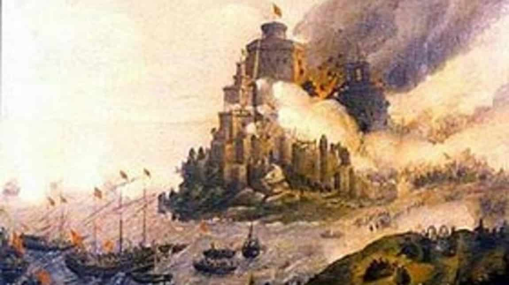
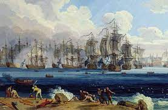

Kanunî Sultan Süleyman Hanın, Rodos şövalyelerinin elindeki Rodos ada ve şehrini, 29 Aralık 1522’de ele geçirmesi.
Anadolu’nun güneybatısında bulunan Rodos Adası, ilk olarak 672'de, Emevîler zamanında, Bizanslılardan alındı. Ada, 680’de tekrar Bizanslılara geçti. Daha sonra Akka’dan kovulan Hospitalier şövalyeleri, buraya yerleştiler (1291). Hıristiyanların en kuvvetli ileri karakolu oldu. Anadolu ve Mısır’a yönelik Haçlı seferlerinde üs olarak kullanıldı. Fethi için, birçok seferler düzenlendiyse de muvaffak olunamadı. Fatih Sultan Mehmed Han zamanında fethe yaklaşıldı ise de, yine muvaffak olunamadı (1480). Cem Sultan’ın, Rodos şövalyelerinin eline geçmesi, onları daha da azgınlaştırdı. Bayezid Han'dan sonra tahta geçen Yavuz Sultan Selim Hanın Mısır’ı fethetmesiyle, Rodos’un önemi daha da arttı. Anadolu’dan Mısır’a giden deniz yollarının emniyetinin tam olarak temin edilmesi, artık katî bir zaruret hâlini almıştı. Yavuz Selim Han, bu maksatla hazırlıklara girişilmesini emretti. Ömrünün vefa etmemesi yüzünden, Rodos’un fethi, oğlu Kanunî Sultan Süleyman Hana kaldı.
Kanunî, Belgrad’ı fethettikten sonra, Avrupalıların kendi içişleriyle uğraşmalarından da istifade ederek, Rodos’u fethetmeye karar verdi.
Kanunî’nin bu niyetini öğrenen şövalyelerin başı Vilye dö Lil Adam, hazırlık yaparak, şövalyeleri topladı ve yiyecek stoku yaptı.

Seferin serdarlığına İkinci Vezir Mustafa Paşa tayin edildi. 300 harp ve 400 nakliye gemisinden meydana gelen donanmanın sevk ve idaresi ise, Barbaros Hayreddin Paşa'nın yanında yetişen meşhur amiral Kurdoğlu Muslihiddin Reis’e verildi. 4 Haziran 1522’de, İstanbul’dan donanmayla harekete geçen Mustafa Paşa, 24 Haziran’da Rodos’a geldi. Kanunî Sultan Süleyman ise, 16 Haziran’da kapıkulu ve eyalet askerleriyle birlikte, İstanbul’dan kara yoluyla harekete geçti.
Mustafa Paşa, Rodos’a gelince, gemi kaptanlarıyla ve Kurdoğlu Muslihiddin Reis’le görüşerek, adanın yardımına gelmesi muhtemel Avrupa gemilerine karşı, limanın icap eden yerlerine muhafaza gemileri koyduktan sonra, Öküzburnu mevkiinden karaya asker çıkardı. Rodos şehrinin etrafına metrisler kazılıp, getirilen büyük muhasara topları yerleştirildi.
Kanunî, Kütahya yoluyla Marmaris’e, oradan da gemilerle Rodos’a çıktı (28 Temmuz). Teslim teklifinin şövalyeler tarafından reddi üzerine, Ağustosun birinci günü kale dövülmeye başlandı.
Bütün Ağustos ayı, karşılıklı top ateşi ve yine karşılıklı lağım açmakla geçti. Açılan top ateşiyle, kalede mühim tahribat yapılmasına rağmen, bu tahribat kısa zamanda düşman tarafından kapatılıyordu. Türk lağımcılarının, devamlı, Rodos burçlarının altına açtıkları lağımlar, Avrupa’nın en meşhur mühendisi olup, şövalyelere yardıma gelen Gariele Martinengo’nun mukabil lağımlarıyla karşılaşıyor ve yer altında korkunç boğuşmalar oluyordu.
Bu sırada, 4 Eylül günü, İleki Adasının da Kara Mahmud Reis tarafından zaptı haberi geldi. Kahraman Reis, kendisi de ön saflarda çarpışırken şehit olmuş, fakat ada ele geçirilmişti. 6 Eylülde ise, Rodos’un kuzeybatısında bulunan İncirli Adası teslim oldu.
Mısır Beylerbeyliğine tayin edilen Mustafa Paşanın yerine, Ahmed Paşa serdar oldu.
Bu günlerde Rodos Kalesinin İngiliz Burcunun güney kısmı, başarılı bir Türk lağımı ile havaya uçuruldu. Şövalyelerin topçu generaliyle Üstad-ı âzamın (Rodos şövalyelerinin başı) alemdarı da ölüler arasındaydı. Eylülün 12’sinde yapılan bir hücumda, bu burca beş zafer bayrağı dikildi. 24 Eylülde yapılan umumî hücumda Yeniçeri Ağası Bâli Ağa, İspanyol Burcuna girip, Türk bayrağını, burcun tepesine diktiyse de netice alınamadı.
10 Aralığa kadar, şiddetli top atışları, lağımlar ve sık sık tekrarlanan umumî hücumlarla, kale iyice yıpratıldı. 18 Aralıkta yapılan bir umumî hücumda şövalyeler, şehir içindeki istihkam ve hendeklerin arkasına çekilmeye mecbur kaldılar ve artık mukavemet etmenin imkânsızlığını da anladıklarından, kaleyi teslim etmeyi kabul ettiler (20 Aralık 1522).
Teslim şartları arasında; şövalyelerin eşya ve top dışındaki silahlarını alıp, on gün içinde Rodos’tan ayrılmaları; bu günler zarfında şehirdeki istihkâmların 4000 yeniçeri tarafından emniyete alınması ve asıl kuvvetlerin iki kilometre mesafede beklemesi yer alıyordu. Kalenin boşaltma işlemlerinden sonra şövalyeler, Üstâd-ı âzam gemilerine binip gittiler. Rodos Kalesiyle beraber Oniki Adanın tamamı ve şövalyelere ait olan Bodrum da Osmanlı Devletine bırakılmıştı. Osmanlı Devletine, 20 000’den fazla şehide mâl olan bu fetihten sonra, Kanunî Sultan Süleyman Han, 29 Aralıkta şehre girip kaleyi gezdi. 2 Ocak Cuma günü ise, camiye çevrilen Saint Jean Kilisesinde Cuma namazını kıldı. Nâmına okunan hutbeyi dinledi. Aynı gün, adadan ayrılıp Marmaris’e geçti.
3 Ocak günü Aydın, Midilli, Karasi, Menteşe, Saruhan sancakbeylerine, Anadolu Beylerbeyi Kasım Paşanın nezaretinde Rodos’taki inşaat, imar ve iskân işleri bitinceye kadar adada kalmalarını emredip, İstanbul’a döndü. Rodos’a derhal Türk göçmenleri yerleştirilmeye başlandı. Ada bir sancak yapılıp, Cezâyir-i Bahr-i Sefîd eyaletine bağlandı. Sancakbeyi olarak Mehmed Bey tayin edildi. Bundan sonra birçok cami, imaret, mektep, medrese ve yol yapılıp ada imar edildi.
